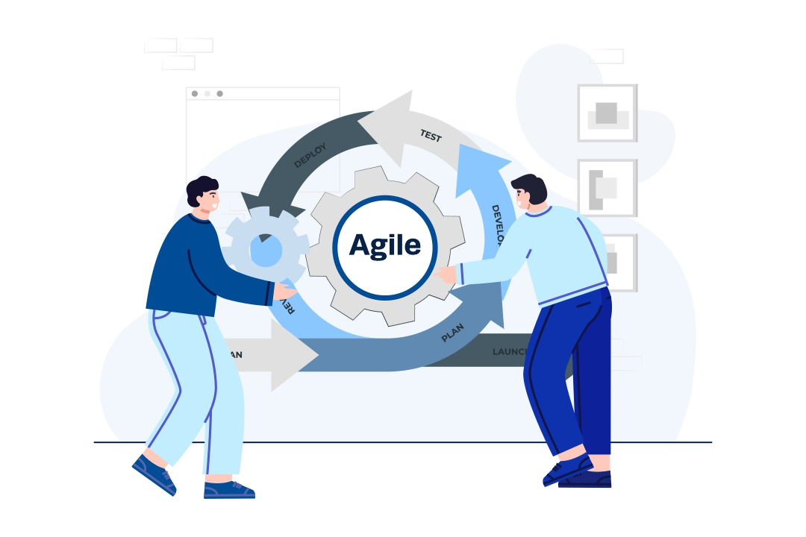
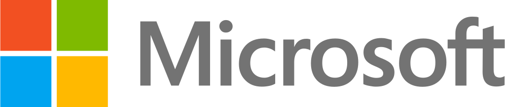

Agile Project Management
wifi LIVE ONLINE

Agile Project Management este o abordare flexibilă și iterativă de gestionare a proiectelor, care pune accent pe colaborare, adaptabilitate și livrarea rapidă de valoare către client. Agile nu înseamnă doar IT, este un mindset ce aduce valoare în orice domeniu, iar Scrum este framework-ul folosit la scară largă de companiile de top. Waterfall, cu tradiția sa de zeci de ani, domină în toate industriile. Având expertiză atât în Agile, cât și în Waterfall, vei acoperi toate zonele de Project Management, devenind un candidat valoros și pregătit pentru orice interviu.
Certificare:

today
În curand
business_center
1 lună
schedule
30 ore
euro_symbol
490
Caracteristici cheie:
- Iterativ și incremental: Proiectele sunt împărțite în cicluri scurte (sprinturi) care duc la rezultate vizinbile și îmbunătățiri continue.
- Flexibilitate și adaptabilitate: Planurile pot fi ajustate pe parcurs, în funcție de feedback și schimbări.
- Orientare pe client: Se pune accent pe satisfacția clientului prin livrări frecvente și feedback constant.
- Colaborare în echipă: Comunicare deschisă, roluri clar definite și implicarea tuturor membrilor
- Transparență și vizibilitate: Progresul este vizibil prin task boards, burndown charts, etc.
- Livrare rapidă de valoare: Fiecare sprint produce un rezultat utilizabil, nu doar documentație.
- Îmbunătățire continuă: Prin retrospective, echipele învață și optimizează procesele.
- Autonomie și responsabilitate: Echipele Agile sunt auto-organizate și își gestionează singure activitatea.
Vrei să afli mai multe? Intră la webinar și descoperă răspunsurile!
Ești pregătit? Înscrie-te acum! Poți face o programare la numărul de telefon +40755957235 sau ne poți lăsa un mesaj prin pagina de Contact, iar noi te vom suna în cel mai scurt timp. Atât tariful, cât și celelalte detalii vor fi comunicate și discutate în cadrul programării.